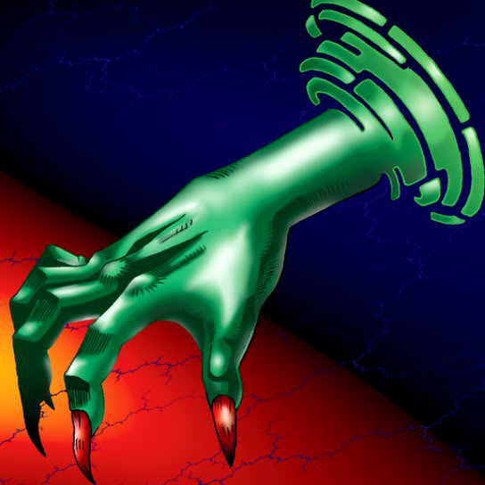

Mystery Hand

Description: "When this card is flipped face-up, if there's a Jigen Bakudan in any adjacent space, teleport 1 Jigen Bakudan to an opponent's summoning area."
STATS
ATK: 500
DEF: 500DECK COST
Deck Cost per Card: 15EFFECT NOT IMPLEMENTED
Fusion List (11 Possible Fusions)
- Mystery Hand + Ancient Jar = The Wicked Worm Beast
- Mystery Hand + Arlownay = Rose Spectre of Dunn
- Mystery Hand + Baby Dragon = Koumori Dragon
- Mystery Hand + Dark Plant = Rose Spectre of Dunn
- Mystery Hand + Fungi of the Musk = Darkworld Thorns
- Mystery Hand + Lesser Dragon = Koumori Dragon
- Mystery Hand + Megirus Light = Darkworld Thorns
- Mystery Hand + Petit Dragon = Koumori Dragon
- Mystery Hand + Psychic Kappa = Hyosube
- Mystery Hand + Queen of Autumn Leaves = Rose Spectre of Dunn
- Mystery Hand + Yamatano Dragon Scroll = Koumori Dragon